소방설비기사(전기분야) (2020-06-06 기출문제)
1과목: 소방원론
1. 이산화탄소에 대한 설명으로 틀린 것은?
- 임계온도는 97.5℃이다.
- 고체의 형태로 존재할 수 있다.
- 불연성가스로 공기보다 무겁다.
- 드라이아이스와 분자식이 동일하다.
(정답률: 84%)

2. 물질의 화재 위험성에 대한 설명으로 틀린 것은?
- 인화점 및 착화점이 낮을수록 위험
- 착화에너지가 작을수록 위험
- 비점 및 융점이 높을수록 위험
- 연소범위가 넓을수록 위험
(정답률: 77%)
3. 다음 중 연소범위를 근거로 계산한 위험도 값이 가장 큰 물질은?
- 이황화탄소
- 메탄
- 수소
- 일산화탄소
(정답률: 72%)
4. 위험물안전관리법령상 제2석유류에 해당하는 것으로만 나열된 것은?
- 아세톤, 벤젠
- 중유, 아닐린
- 에테르, 이황화탄소
- 아세트산, 아크릴산
(정답률: 56%)
5. 종이, 나무, 섬유류 등에 의한 화재에 해당하는 것은?
- A급 화재
- B급 화재
- C급 화재
- D급 화재
(정답률: 91%)
6. 0℃, 1기압에서 44.8m3의 용적을 가진 이산화탄소를 액화하여 얻을 수 있는 액화탄산 가스의 무게는 약 몇 ㎏인가?
- 88
- 44
- 22
- 11
(정답률: 55%)
7. 가연물이 연소가 잘 되기 위한 구비조건으로 틀린 것은?
- 열전도율이 클 것
- 산소와 화학적으로 친화력이 클 것
- 표면적이 클 것
- 활성화 에너지가 작을 것
(정답률: 79%)
8. 다음 중 소화에 필요한 이산화탄소 소화약제의 최소 설계농도 값이 가장 높은 물질은?
- 메탄
- 에틸렌
- 천연가스
- 아세틸렌
(정답률: 67%)
9. 이산화탄소의 증기비중은 약 얼마인가? (단, 공기의 분자량은 29이다.)
- 0.81
- 1.52
- 2.02
- 2.51
(정답률: 86%)
10. 유류탱크 화재 시 기름 표면에 물을 살수하면 기름이 탱크 밖으로 비산하여 화재가 확대되는 현상은?
- 슬롭 오버(Slop over)
- 플래시 오버(Flash over)
- 프로스 오버(Froth over)
- 블레비(BLEVE)
(정답률: 76%)
11. 실내 화재 시 발생한 연기로 인한 감광계수 (m-1)와 가시거리에 대한 설명 중 틀린 것은?
- 감광계수가 0.1일 때 가시거리는 20~30m이다.
- 감광계수가 0.3일 때 가시거리는 15~20m이다.
- 감광계수가 1.0일 때 가시거리는 1~2m이다.
- 감광계수가 10일 때 가시거리는 0.2~0.5m이다.
(정답률: 74%)
12. NH4H2PO4를 주성분으로 한 분말소화약제는 제 몇 종 분말소화약제인가?
- 제1종
- 제2종
- 제3종
- 제4종
(정답률: 85%)
13. 다음 물질 중 연소하였을 때 시안화수소를 가장 많이 발생시키는 물질은?
- Polyethylene
- Polyurethane
- Polyvinyl chloride
- Polystyrene
(정답률: 66%)
14. 다음 물질의 저장창고에서 화재가 발생하였을 때 주수소화를 할 수 없는 물질은?
- 부틸리튬
- 질산에틸
- 니트로셀룰로오스
- 적린
(정답률: 63%)
15. 다음 중 상온·상압에서 액체인 것은?
- 탄산가스
- 할론 1301
- 할론 2402
- 할론 1211
(정답률: 75%)
16. 밀폐된 내화건물의 실내에 화재가 발생했을 때 그 실내의 환경변화에 대한 설명 중 틀린 것은?
- 기압이 급강하한다.
- 산소가 감소된다.
- 일산화탄소가 증가한다.
- 이산화탄소가 증가한다.
(정답률: 85%)
17. 제거소화의 예에 해당하지 않는 것은?
- 밀폐 공간에서의 화재 시 공기를 제거한 다.
- 가연성가스 화재 시 가스의 밸브를 닫는 다.
- 산림화재 시 확산을 막기 위하여 산림의 일부를 벌목한다.
- 유류탱크 화재 시 연소되지 않은 기름을 다른 탱크로 이동시킨다.
(정답률: 83%)
18. 화재 시 나타나는 인간의 피난특성으로 볼 수 없는 것은?
- 어두운 곳으로 대피한다.
- 최초로 행동한 사람을 따른다.
- 발화지점의 반대방향으로 이동한다.
- 평소에 사용하던 문, 통로를 사용한다.
(정답률: 91%)
19. 산소의 농도를 낮추어 소화하는 방법은?
- 냉각소화
- 질식소화
- 제거소화
- 억제소화
(정답률: 85%)
20. 인화알루미늄의 화재 시 주수소화하면 발생 하는 물질은?
- 수소
- 메탄
- 포스핀
- 아세틸렌
(정답률: 64%)
2과목: 소방전기회로
21. 인덕턴스가 0.5H인 코일의 리액턴스가 753.6Ω일 때 주파수는 약 몇 Hz인가?
- 120
- 240
- 360
- 480
(정답률: 64%)
22. 최고 눈금 50mV, 내부 저항이 100Ω인 직류 전압계에 1.2㏁의 배율기를 접속하면 측정할 수 있는 최대 전압은 약 몇 V인가?
- 3
- 60
- 600
- 1200
(정답률: 62%)
23. 그림과 같은 블록선도에서 출력 C(s)는?
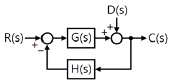
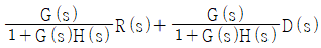
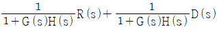
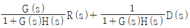
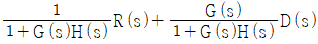
(정답률: 65%)
24. 변위를 전압으로 변환시키는 장치가 아닌 것은?
- 포텐셔미터
- 차동변압기
- 전위차계
- 측온저항체
(정답률: 70%)
25. 단상변압기의 권수비가 a＝8이고, 1차 교류전압의 실효치는 110V이다. 변압기 2차 전압을 단상 반파 정류회로를 이용하여 정류했을 때 발생하는 직류 전압의 평균치는 약 몇 V인가?
- 6.19
- 6.29
- 6.39
- 6.88
(정답률: 54%)
26. 그림과 같은 유접점 회로의 논리식은?
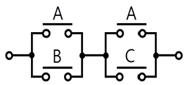
- A＋BㆍC
- AㆍB＋C
- B＋AㆍC
- AㆍB＋BㆍC
(정답률: 67%)
27. 평형 3상 부하의 선간전압이 200V, 전류가 10A, 역률이 70.7%일 때 무효전력은 약 몇 var인가?
- 2880
- 2450
- 2000
- 1410
(정답률: 58%)
28. 제어 대상에서 제어량을 측정하고 검출하여 주궤환 신호를 만드는 것은?
- 조작부
- 출력부
- 검출부
- 제어부
(정답률: 56%)
29. 복소수로 표시된 전압 10－j[V]를 어떤 회로에 가하는 경우 5＋j[A]의 전류가 흘렀다면 이 회로의 저항은 약 몇 Ω인가?
- 1.88
- 3.6
- 4.5
- 5.46
(정답률: 60%)
30. 다음 중 직류전동기의 제동법이 아닌 것은?
- 회생제동
- 정상제동
- 발전제동
- 역전제동
(정답률: 68%)
31. 자동화재탐지설비의 감지기 회로의 길이가 500m이고, 종단에 8kΩ의 저항이 연결되어 있는 회로에 24V의 전압이 가해졌을 경우 도통 시험 시 전류는 약 몇 ㎃인가? (단, 동선의 저항률은 1.69×10-8Ω·m이며, 동선의 단면적은 2.5mm2이고, 접촉저항 등은 없다고 본다.)
- 2.4
- 3.0
- 4.8
- 6.0
(정답률: 50%)
32. 다음 회로에서 출력전압은 몇 V인가? (단, A＝5V, B＝0V인 경우이다.)
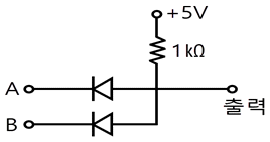
- 0
- 5
- 10
- 15
(정답률: 64%)
33. 평행한 왕복 전선에 10A의 전류가 흐를 때 전선 사이에 작용하는 전자력[N/m]은? (단, 전선의 간격은 40㎝이다.)
- 5×10-5N/m, 서로 반발하는 힘
- 5×10-5N/m, 서로 흡인하는 힘
- 7×10-5N/m, 서로 반발하는 힘
- 7×10-5N/m, 서로 흡인하는 힘
(정답률: 59%)
34. 수정, 전기석 등의 결정에 압력을 가하여 변형을 주면 변형에 비례하여 전압이 발생하는 현상을 무엇이라 하는가?
- 국부작용
- 전기분해
- 압전현상
- 성극작용
(정답률: 76%)
35. 그림과 같이 전류계 A1, A2를 접속할 경우 A1은 25A, A2는 5A를 지시하였다. 전류계 A2의 내부저항은 몇 Ω인가?
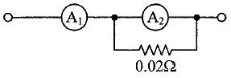
- 0.⑤
- 0.08
- 0.12
- 0.15
(정답률: 58%)
36. 반지름 20㎝, 권수 50회인 원형코일에 2A의 전류를 흘려주었을 때 코일 중심에서 자계(자기장)의 세기[AT/m]는?
- 70
- 100
- 125
- 250
(정답률: 45%)
37. 그림과 같은 무접점회로의 논리식(Y)은?
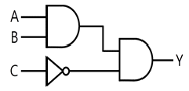
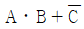
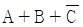
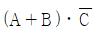
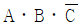
(정답률: 64%)
38. 전원 전압을 일정하게 유지하기 위하여 사용하는 다이오드는?
- 쇼트키다이오드
- 터널다이오드
- 제너다이오드
- 버랙터다이오드
(정답률: 78%)
39. 동기발전기의 병렬운전 조건으로 틀린 것은?
- 기전력의 크기가 같을 것
- 기전력의 위상이 같을 것
- 기전력의 주파수가 같을 것
- 극수가 같을 것
(정답률: 74%)
40. 메거(megger)는 어떤 저항을 측정하기 위한 장치인가?
- 절연저항
- 접지저항
- 전지의 내부저항
- 궤조저항
(정답률: 83%)
3과목: 소방관계법규
41. 소방시설공사업법령에 따른 소방시설업 등록이 가능한 사람은?
- 피성년후견인
- 위험물안전관리법에 따른 금고 이상의 형의 집행유예를 선고받고 그 유예기간 중에 있는 사람
- 등록하려는 소방시설업 등록이 취소된 날부터 3년이 지난 사람
- 소방기본법에 따른 금고 이상의 실형을 선고받고 그 집행이 면제된 날부터 1년이 지난 사람
(정답률: 81%)
42. 화재예방, 소방시설 설치·유지 및 안전관리에 관한 법률상 방염성능기준 이상의 실내 장식물 등을 설치해야 하는 특정소방대상물이 아닌 것은?
- 숙박이 가능한 수련시설
- 층수가 11층 이상인 아파트
- 건축물 옥내에 있는 종교시설
- 방송통신시설 중 방송국 및 촬영소
(정답률: 75%)
43. 소방시설공사업법령상 소방공사감리를 실시함에 있어 용도와 구조에서 특별히 안전성과 보안성이 요구되는 소방대상물로서 소방 시설물에 대한 감리를 감리업자가 아닌 자가 감리할 수 있는 장소는?
- 정보기관의 청사
- 교도소 등 교정관련시설
- 국방 관계시설 설치장소
- 원자력안전법상 관계시설이 설치되는 장소
(정답률: 72%)
44. 위험물안전관리법령상 다음의 규정을 위반하여 위험물의 운송에 관한 기준을 따르지 아니한 자에 대한 과태료 기준은?(2021년 개정된 규정 적용됨)
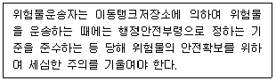
- 100만 원 이하
- 300만 원 이하
- 500만 원 이하
- 1000만 원 이하
(정답률: 39%)
45. 다음 소방시설 중 경보설비가 아닌 것은?
- 통합감시시설
- 가스누설경보기
- 비상콘센트설비
- 자동화재속보설비
(정답률: 76%)
46. 소방기본법령에 따라 주거지역·상업지역 및 공업지역에 소방용수시설을 설치하는 경우 소방대상물과의 수평거리를 몇 m 이하가 되도록 해야 하는가?
- 50
- 100
- 150
- 200
(정답률: 60%)
47. 소방기본법령상 정당한 사유 없이 화재의 예방조치에 관한 명령에 따르지 아니한 경우에 대한 벌칙은?
- 100만 원 이하의 벌금
- 200만 원 이하의 벌금
- 300만 원 이하의 벌금
- 500만 원 이하의 벌금
(정답률: 43%)
48. 소방기본법령상 불꽃을 사용하는 용접·용단 기구의 용접 또는 용단 작업장에서 지켜야 하는 사항 중 다음 ( ) 안에 알맞은 것은?
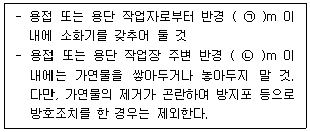
- ㉠ 3, ㉡ 5
- ㉠ 5, ㉡ 3
- ㉠ 5, ㉡ 10
- ㉠ 10, ㉡ 5
(정답률: 72%)
49. 소방기본법령상 소방업무 상호응원협정 체결 시 포함되어야 하는 사항이 아닌 것은?
- 응원출동의 요청방법
- 응원출동훈련 및 평가
- 응원출동대상지역 및 규모
- 응원출동 시 현장지휘에 관한 사항
(정답률: 48%)
50. 위험물안전관리법령상 제조소등의 경보설비 설치기준에 대한 설명으로 틀린 것은?
- 제조소 및 일반취급소의 연면적이 500m2 이상인 것에는 자동화재탐지설비를 설치한다.
- 자동신호장치를 갖춘 스프링클러설비 또는 물분무등소화설비를 설치한 제조소등에 있어서는 자동화재탐지설비를 설치한 것으로 본다.
- 경보설비는 자동화재탐지설비·비상경보설비(비상벨장치 또는 경종 포함)·확성장치 (휴대용확성기 포함) 및 비상방송설비로 구분한다.
- 지정수량의 10배 이상의 위험물을 저장 또는 취급하는 제조소등(이동탱크저장소를 포함한다)에는 화재발생시 이를 알릴 수 있는 경보설비를 설치하여야 한다.
(정답률: 41%)
51. 위험물안전관리법령에 따라 위험물안전관리자를 해임하거나 퇴직한 때에는 해임하거나 퇴직한 날부터 며칠 이내에 다시 안전관리 자를 선임하여야 하는가?
- 30일
- 35일
- 40일
- 55일
(정답률: 85%)
52. 소방시설공사업법령에 따른 소방시설업의 등록권자는?
- 국무총리
- 소방서장
- 시·도지사
- 한국소방안전협회장
(정답률: 75%)
53. 소방기본법령에 따른 소방용수시설 급수탑 개폐밸브의 설치기준으로 맞는 것은?
- 지상에서 1.0m 이상 1.5m 이하
- 지상에서 1.2m 이상 1.8m 이하
- 지상에서 1.5m 이상 1.7m 이하
- 지상에서 1.5m 이상 2.0m 이하
(정답률: 72%)
54. 위험물안전관리법령상 정기검사를 받아야 하는 특정·준특정옥외탱크저장소의 관계인은 특정·준특정옥외탱크저장소의 설치허가에 따른 완공검사필증을 발급받은 날부터 몇 년 이내에 정기검사를 받아야 하는가?
- 9
- 10
- 11
- 12
(정답률: 50%)
55. 화재예방, 소방시설 설치·유지 및 안전관리에 관한 법률상 소방시설 등에 대한 자체점검 중 종합정밀점검 대상인 것은?
- 제연설비가 설치되지 않은 터널
- 스프링클러설비가 설치된 연면적이 5000m2이고, 12층인 아파트
- 물분무등소화설비가 설치된 연면적이 5000m2인 위험물 제조소
- 호스릴 방식의 물분무등소화설비만을 설치한 연면적 3000m2인 특정소방대상물
(정답률: 43%)
56. 화재예방, 소방시설 설치·유지 및 안전관리에 관한 법률상 소방용품의 형식승인을 받지 아니하고 소방용품을 제조하거나 수입한 자에 대한 벌칙 기준은?
- 100만 원 이하의 벌금
- 300만 원 이하의 벌금
- 1년 이하의 징역 또는 1천만 원 이하의 벌금
- 3년 이하의 징역 또는 3천만 원 이하의 벌금
(정답률: 62%)
57. 화재예방, 소방시설 설치·유지 및 안전관리에 관한 법률상 소방안전관리대상물의 소방 안전관리자의 업무가 아닌 것은?
- 소방시설 공사
- 소방훈련 및 교육
- 소방계획서의 작성 및 시행
- 자위소방대의 구성·운영·교육
(정답률: 70%)
58. 소방기본법에 따라 화재 등 그 밖의 위급한 상황이 발생한 현장에서 소방활동을 위하여 필요한 때에는 그 관할구역에 사는 사람 또는 그 현장에 있는 사람으로 하여금 사람을 구출하는 일 또는 불을 끄는 등의 일을 하도록 명령할 수 있는 권한이 없는 사람은?
- 소방서장
- 소방대장
- 시·도지사
- 소방본부장
(정답률: 77%)
59. 화재예방, 소방시설 설치·유지 및 안전관리에 관한 법률상 화재위험도가 낮은 특정소방대상물 중 소방대가 조직되어 24시간 근무하고 있는 청사 및 차고에 설치하지 아니할 수 있는 소방시설이 아닌 것은?
- 피난기구
- 비상방송설비
- 연결송수관설비
- 자동화재탐지설비
(정답률: 57%)
60. 화재예방, 소방시설 설치·유지 및 안전관리에 관한 법률상 건축허가 등의 동의대상물이 아닌 것은?
- 항공기 격납고
- 연면적이 300m2인 공연장
- 바닥면적이 300m2인 차고
- 연면적이 300m2인 노유자 시설
(정답률: 42%)
4과목: 소방전기시설의 구조 및 원리
61. 소방시설용 비상전원수전설비의 화재안전기 준(NFSC 602)에 따라 소방시설용 비상전원 수전설비에서 소방회로 및 일반회로 겸용의 것으로서 수전설비, 변전설비 그 밖의 기기 및 배선을 금속제 외함에 수납한 것은?
- 공용분전반
- 전용배전반
- 공용큐비클식
- 전용큐비클식
(정답률: 63%)
62. 비상조명등의 화재안전기준(NFSC 304)에 따른 비상조명등의 시설기준에 적합하지 않은 것은?
- 조도는 비상조명등이 설치된 장소의 각 부분의 바닥에서 0.5lx가 되도록 하였다.
- 특정소방대상물의 각 거실과 그로부터 지상에 이르는 복도·계단 및 그 밖의 통로에 설치하였다.
- 예비전원을 내장하는 비상조명등에 평상시 점등여부를 확인할 수 있는 점검스위치를 설치하였다.
- 예비전원을 내장하는 비상조명등에 해당 조명등을 유효하게 작동시킬 수 있는 용량의 축전지와 예비전원 충전장치를 내장하도록 하였다.
(정답률: 79%)
63. 자동화재탐지설비 및 시각경보장치의 화재안전기준(NFSC 203)에 따른 공기관식 차동식분포형 감지기의 설치기준으로 틀린 것은?
- 검출부는 3° 이상 경사되지 아니하도록 부착할 것
- 공기관의 노출부분은 감지구역마다 20m 이상이 되도록 할 것
- 하나의 검출부분에 접속하는 공기관의 길이는 100m 이하로 할 것
- 공기관과 감지구역의 각 변과의 수평거리는 1.5m 이하가 되도록 할 것
(정답률: 68%)
64. 무선통신보조설비의 화재안전기준(NFSC 5⑤)에 따라 무선통신보조설비의 주회로 전원이 정상인지 여부를 확인하기 위해 증폭기의 전면에 설치하는 것은?
- 상순계
- 전류계
- 전압계 및 전류계
- 표시등 및 전압계
(정답률: 77%)
65. 유도등 및 유도표지의 화재안전기준(NFSC 303)에 따라 지하층을 제외한 층수가 11층 이상인 특정소방대상물의 유도등의 비상전원을 축전지로 설치한다면 피난층에 이르는 부분의 유도등을 몇 분 이상 유효하게 작동 시킬 수 있는 용량으로 하여야 하는가?
- 10
- 20
- 50
- 60
(정답률: 68%)
66. 비상경보설비 및 단독경보형감지기의 화재안전기준(NFSC 201)에 따라 바닥면적이 450m2일 경우 단독경보형감지기의 최소 설치개수는?
- 1개
- 2개
- 3개
- 4개
(정답률: 77%)
67. 비상방송설비의 배선공사 종류 중 합성수지관공사에 대한 설명으로 틀린 것은?(문제 오류로 가답안 발표시 4번으로 발표되었지만 확정답안 발표시 2, 4번이 정답처리 되었습니다. 여기서는 가답안인 4번을 누르시면 정답 처리 됩니다.)
- 금속관 공사에 비해 중량이 가벼워 시공이 용이하다.
- 절연성이 있어 누전의 우려가 없기 때문에 접지공사가 필요치 않다.
- 열에 약하며, 기계적 충격 및 중량물에 의한 압력 등 외력에 약하다.
- 내식성이 있어 부식성 가스가 체류하는 화학공장 등에 적합하며, 금속관과 비교하여 가격이 비싸다.
(정답률: 76%)
68. 자동화재탐지설비 및 시각경보장치의 화재안전기준(NFSC 203)에 따라 자동화재탐지설비에서 4층 이상의 특정소방대상물에는 어떤 기기와 전화통화가 가능한 수신기를 설치하여야 하는가?
- 발신기
- 감지기
- 중계기
- 시각경보장치
(정답률: 75%)
69. 비상경보설비 및 단독경보형감지기의 화재안전기준(NFSC 201)에 따라 비상경보설비의 발신기 설치 시 복도 또는 별도로 구획된 실로서 보행거리가 몇 m 이상일 경우에는 추가로 설치하여야 하는가?
- 25
- 30
- 40
- 50
(정답률: 37%)
70. 비상방송설비의 화재안전기준(NFSC 202)에 따라 비상방송설비에서 기동장치에 따른 화재신고를 수신한 후 필요한 음량으로 화재 발생 상황 및 피난에 유효한 방송이 자동으로 개시될 때까지의 소요시간은 몇 초 이하로 하여야 하는가?
- 5
- 10
- 15
- 20
(정답률: 79%)
71. 비상콘센트설비의 화재안전기준(NFSC 504) 에 따른 비상콘센트의 시설기준에 적합하지 않은 것은?(오류 신고가 접수된 문제입니다. 반드시 정답과 해설을 확인하시기 바랍니다.)
- 바닥으로부터 높이 1.45m에 움직이지 않게 고정시켜 설치된 경우
- 바닥면적이 800m2인 층의 계단의 출입구로부터 4m에 설치된 경우
- 바닥면적의 합계가 12,000m2 인 지하상가의 수평거리 30m마다 추가 설치된 경우
- 바닥면적의 합계가 2,500m2 인 지하층의 수평거리 40m마다 추가로 설치한 경우
(정답률: 38%)
72. 누전경보기의 형식승인 및 제품검사의 기술 기준에 따라 누전경보기의 수신부는 그 정격전압에서 몇 회의 누전작동시험을 실시하는가?
- 1,000회
- 5,000회
- 10,000회
- 20,000회
(정답률: 72%)
73. 무선통신보조설비의 화재안전기준(NFSC 5⑤) 에 따라 서로 다른 주파수의 합성된 신호를 분리하기 위하여 사용하는 장치는?
- 분배기
- 혼합기
- 증폭기
- 분파기
(정답률: 68%)
74. 비상콘센트설비의 화재안전기준(NFSC 504) 에 따라 비상콘센트설비의 전원부와 외함 사이의 절연저항은 전원부와 외함 사이를 500V 절연저항계로 측정할 때 몇 ㏁ 이상 이어야 하는가?
- 20
- 30
- 40
- 50
(정답률: 66%)
75. 비상경보설비의 구성요소로 옳은 것은?(문제 오류로 가답안 발표시 2번으로 발표되었지만 확정답안 발표시 모두 정답처리 되었습니다. 여기서는 가답안인 2번을 누르면 정답 처리 됩니다.)
- 기동장치, 경종, 화재표시등, 전원
- 전원, 경종, 기동장치, 위치표시등
- 위치표시등, 경종, 화재표시등, 전원
- 경종, 기동장치, 화재표시등, 위치표시등
(정답률: 79%)
76. 수신기를 나타내는 소방시설 도시기호로 옳은 것은?
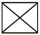
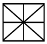
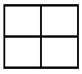
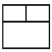
(정답률: 74%)
77. 비상경보설비 및 단독경보형감지기의 화재안전기준(NFSC 201)에 따른 비상벨설비 또는 자동식 사이렌설비에 대한 설명이다. 다음 ( )의 ㉠, ㉡에 들어갈 내용으로 옳은 것은?
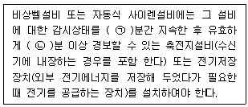
- ㉠ 30, ㉡ 10
- ㉠ 60, ㉡ 10
- ㉠ 30, ㉡ 20
- ㉠ 60, ㉡ 20
(정답률: 75%)
78. 비상경보설비 및 단독경보형감지기의 화재안전기준(NFSC 201)에 따라 비상벨설비 또는 자동식 사이렌설비의 전원회로 배선 중 내열배선에 사용하는 전선의 종류가 아닌 것은?
- 버스덕트(Bus Duct)
- 600V 1종 비닐절연전선
- 0.6/1kV EP 고무절연 클로로프렌 시스 케이블
- 450/750V 저독성 난연 가교 폴리올레핀 절연전선
(정답률: 62%)
79. 자동화재탐지설비 및 시각경보장치의 화재안전기준(NFSC 203)에 따라 감지기 회로의 도통시험을 위한 종단저항의 설치기준으로 틀린 것은?
- 동일층 발신기함 외부에 설치할 것
- 점검 및 관리가 쉬운 장소에 설치할 것
- 전용함을 설치하는 경우 그 설치 높이는 바닥으로부터 1.5m 이내로 할 것
- 종단감지기에 설치할 경우에는 구별이 쉽도록 해당 감지기의 기판 등에 별도의 표시를 할 것
(정답률: 70%)
80. 자동화재속보설비의 속보기의 성능인증 및 제품검사의 기술기준에 따른 자동화재속보설비의 속보기에 대한 설명이다. 다음 ( )의 ㉠, ㉡에 들어갈 내용으로 옳은 것은?
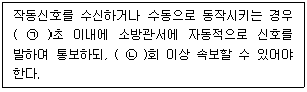
- ㉠ 20, ㉡ 3
- ㉠ 20, ㉡ 4
- ㉠ 30, ㉡ 3
- ㉠ 30, ㉡ 4
(정답률: 71%)